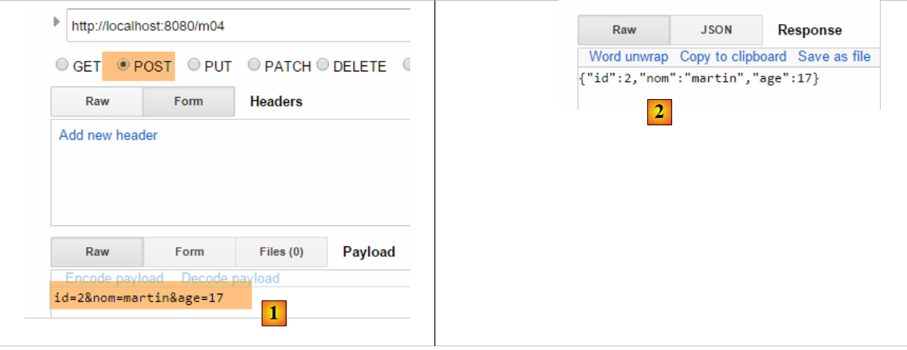
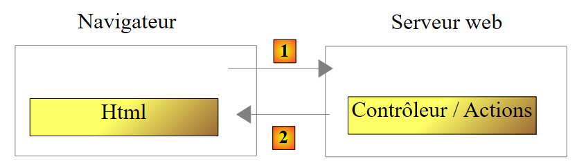
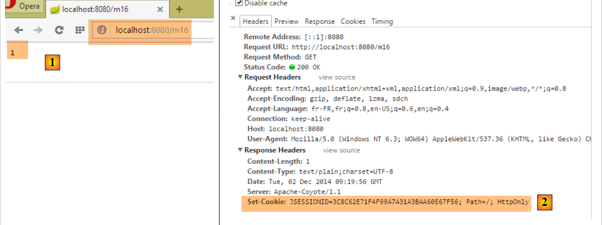
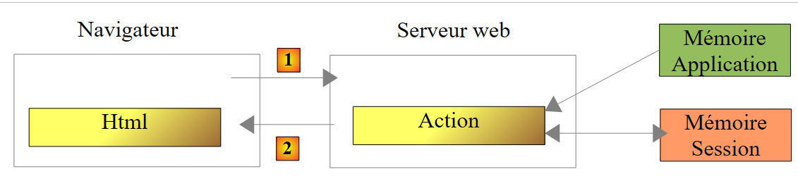
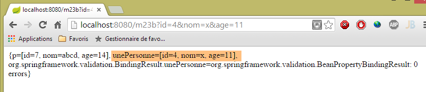
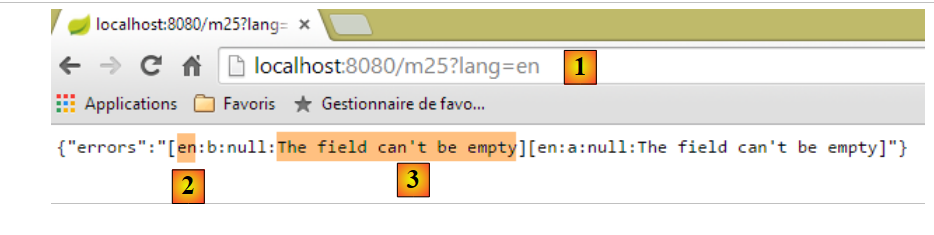
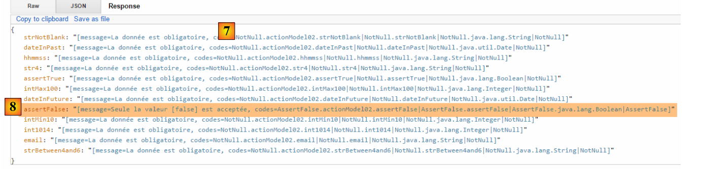
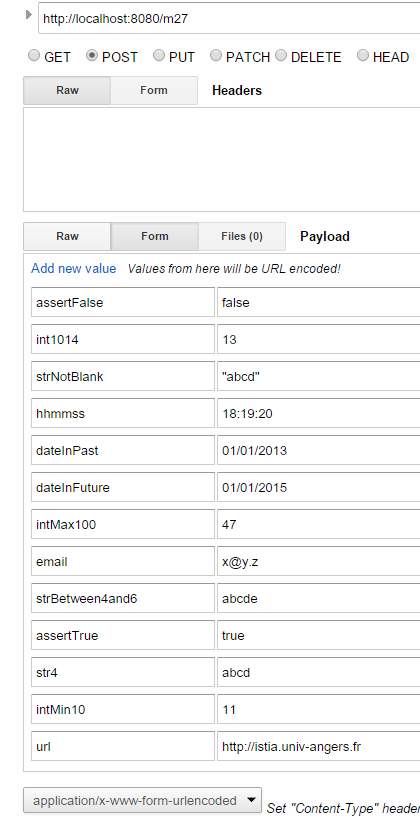

4. 操作：模型
让我们回到 Spring 应用程序的架构 MVC：
 |
在上一章中，我们探讨了将请求 [1] 引导至控制器及负责处理该请求的操作 [2a] 的过程，这一机制被称为路由。此外，我们还介绍了操作可能向浏览器返回的各种响应。 目前我们介绍的动作并未利用其接收到的请求。一个 [1] 请求携带了各种信息，Spring 会将这些信息以模型的形式传递给动作。 请勿将此术语与视图 V [2c] 的模型 M 混淆，该视图由操作生成：
 |
- 客户端的请求 HTTP 到达 [1]；
- 在 [2] 中，请求中包含的信息将被转换为操作模板 [3]（通常但并非必然是一个类），该模板将作为操作 [4] 的输入；
- 在 [4] 中，该操作将基于此模型生成响应。该响应包含两个组成部分：视图 V [6] 及其对应的模型 M [5]；
- 视图 V [6] 将使用其模型 M [5] 来生成发给客户端的响应 HTTP。
在 MVC 模型中，操作 [4] 属于 C（控制器），视图 [5] 的模型是 M，而视图 [6] 是 V。
本章探讨了请求所携带的信息（本质上是字符串）与操作模型（可能是一个具有多种类型属性的类）之间的关联机制。
注：术语 [Modèle d'action] 并非有效术语。
我们为这些新操作创建一个新的控制器：
 |
控制器 [ActionModelController] 目前如下所示：
package istia.st.springmvc.controllers;
import org.springframework.web.bind.annotation.RestController;
@RestController
public class ActionModelController {
}
- 第 5 行：需注意，注解 [@RestController] 会导致发送给客户端的响应是控制器操作结果的字符串序列化；
4.1. [/m01]：GET的参数
我们添加以下 [/m01] 操作：
// ----------------------- 使用 GET 获取参数------------------------
@RequestMapping(value = "/m01", method = RequestMethod.GET, produces = "text/plain;charset=UTF-8")
public String m01(String nom, String age) {
return String.format("Hello [%s-%s]!, Greetings from Spring Boot!", nom, age);
}
- 第 4 行：该操作接受两个名为 [nom] 和 [age] 的参数。它们将通过 HTTP 和 GET 请求中同名的参数进行初始化；
在 Chrome 中，[1-3] 的结果如下：
 |
- 在 [1] 中，包含参数 [nom] 和 [age] 的请求 GET；
- 在 [3] 中，可以看到操作 [/m01] 确实已获取了这些参数；
4.2. [/m02]：POST的参数
我们添加以下操作 [/m02]：
// ----------------------- 使用 POST 获取参数------------------------
@RequestMapping(value = "/m02", method = RequestMethod.POST, produces = "text/plain;charset=UTF-8")
public String m02(String nom, String age) {
return String.format("Hello [%s-%s]!, Greetings from Spring Boot!", nom, age);
}
- 第 4 行：该操作接受两个名为 [nom] 和 [age] 的参数。它们将通过 HTTP 和 POST 请求中同名的参数进行初始化；
使用 [Advanced rest Client] 得到的结果如下：
 |
- 在 [1-3] 中，包含使用 POST 请求以及 [nom] 和 [age] 参数的请求；
- 在 [4-5] 中，将请求 POST 的标头 HTTP 设为 [Content-Type]。它应为 [Content-Type: application/x-www-form-urlencoded]；
- 在 [6] 中，[Form Data] 列出了操作 POST 的参数列表。此处可见参数 [nom] 和 [age]；
- 在 [7] 中，服务器响应显示操作 [/m02] 已成功获取参数 [nom] 和 [age]；；
4.3. [/m03]：同名参数
我们在第2.5.2.8节中看到，多选列表可以向服务器发送同名参数。让我们看看操作如何获取这些参数。我们添加以下操作[/m03]：
// ----------------------- 获取同名参数-----------------
@RequestMapping(value = "/m03", method = RequestMethod.POST, produces = "text/plain;charset=UTF-8")
public String m03(String nom[]) {
return String.format("Hello [%s]!, Greetings from Spring Boot!", String.join("-", nom));
}
- 第2行：该操作接受一个名为[nom[]]的参数。由于此处未指定请求类型，该参数将初始化为所有名称相同的参数值，无论这些参数来自GET还是POST；
结果如下：
 |
- 通过 POST 和 [1]，发送参数 [2]；
- 同时在 URL 和 [3] 中也设置了参数；
- 在 [4] 中，四个名称相同的参数 [nom]： [Query String parameters] 是 URL 的参数，[Form Data] 是已提交的参数；
- 在 [5] 中，可以看到操作 [/m03] 已获取了名为 [nom] 的四个参数；
4.4. [/m04]：将操作的参数映射到 Java 对象中
假设有一个新的操作 [/m04]，如下所示：
// ------ 将参数映射到对象（Command Object）中 ---------------
@RequestMapping(value = "/m04", method = RequestMethod.POST)
public Personne m04(Personne personne) {
return person;
}
- 第 3 行：该操作的参数为以下类型的人员：
public class Personne {
// 标识符
private Integer id;
// 姓名
private String nom;
// 年龄
private int age;
....
// 获取器和设置器
...
}
- 为了创建参数 [Personne personne]，Spring MVC 会生成一个 [new Personne()]；
- 随后，如果存在名称与所创建对象字段（如 [id, nom, age]）对应的参数，则通过这些字段的 setter 方法进行实例化；
- 第 4 行：该操作返回类型为 [Personne]，因此会在发送给客户端之前被序列化为字符串。 我们已经看到，默认情况下执行的是 jSON 序列化。因此，客户端应收到某人的 jSON 字符串；
以下是一个示例：
 |
- 转换为 [1]，参数 [id, nom, age] 用于构建对象 [Personne]；
- 在 [2] 中，该人员的字符串 jSON；
如果未发送某人的所有字段会发生什么？让我们试一试：
 |
- 转换为 [2]，此时仅初始化了参数 [id]；
4.5. [/m05]：获取 URL 的元素
假设存在以下新的操作 [/m05]：
// ----------------------- 获取 URL 中的元素 ------------------------
@RequestMapping(value = "/m05/{a}/x/{b}", method = RequestMethod.GET)
public Map<String, String> m05(@PathVariable("a") String a, @PathVariable("b") String b) {
Map<String, String> map = new HashMap<String, String>();
map.put("a", a);
map.put("b", b);
return map;
}
- 第 2 行：已处理的 URL 采用 [/m05/{a}/x/{b}] 的形式，其中 {param} 是 URL 的参数元素；
- 第3行：通过注释[@PathVariable]提取URL的参数元素；
- 第4-6行：检索到的[a]和[b]元素被放入一个字典中；
- 第 7 行：响应将取自该字典中的字符串 jSON；
结果如下：
 |
4.6. [/m06]：从 URL 中提取元素及参数
即如下所示的新操作 [/m06]：
// -------- 从 URL 获取元素及参数 ----------------
@RequestMapping(value = "/m06/{a}/x/{b}", method = RequestMethod.GET)
public Map<String, Object> m06(@PathVariable("a") Integer a, @PathVariable("b") Double b, Double c) {
Map<String, Object> map = new HashMap<String, Object>();
map.put("a", a);
map.put("b", b);
map.put("c", c);
return map;
}
- 第 3 行： 同时获取来自 URL 和 [Integer a, Double b] 的元素，以及一个参数（GET 或 POST）[Double c]；
- 第4-7行：将这些元素放入字典中；
- 第8行：形成客户端的响应，因此客户端将从该字典中获取字符串 jSON；
以下是结果：
 |
请注意路径 [http://localhost:8080/m06/100/x/200.43/] 末尾的 /。如果没有它，将得到以下错误结果：
 |
4.7. [/m07]：获取完整的查询
假设存在以下新的操作 [/m07]：
// ------ 访问查询 HttpServletRequest ------------------------
@RequestMapping(value = "/m07", method = RequestMethod.GET, produces = "text/plain;charset=UTF-8")
public String m07(HttpServletRequest request) {
// HTTP 的表头
Enumeration<String> headerNames = request.getHeaderNames();
StringBuffer buffer = new StringBuffer();
while (headerNames.hasMoreElements()) {
String name = headerNames.nextElement();
buffer.append(String.format("%s : %s\n", name, request.getHeader(name)));
}
return buffer.toString();
}
- 第 3 行：要求 Spring MVC 注入对象 [HttpServletRequest request]，该对象封装了请求中可获取的所有信息；
- 第5-10行：提取请求中的所有头部信息，将其组合成字符串并发送给客户端（第11行）；
结果如下：
 |
- 在 [1] 中，查询的 HTTP 表头；
 |
- 变为 [2]，即响应。其中确实包含了请求中的所有 HTTP 头部。
4.8. [/m08]：访问对象 [Writer]
考虑以下操作：
// ----------------------- 写入器注入 ------------------------
@RequestMapping(value = "/m08", method = RequestMethod.GET)
public void m08(Writer writer) throws IOException {
writer.write("Bonjour le monde !");
}
- 第 3 行：Spring MVC 注入了 [Writer writer] 对象，该对象用于向客户端响应流中写入内容；
- 第 3 行：该操作返回类型为 [void]，这表明它必须自行构建发给客户的响应；
- 第 4 行：在发给客户的响应流中添加文本；
结果如下：
 |
- 在 [2] 中，可以看到 HTTP [Content-Type] 头部未被发送；
- 在 [3] 中，响应内容；
4.9. [/m09]：访问标头 HTTP
考虑以下操作：
// ----------------------- RequestHeader 注入 ------------------------
@RequestMapping(value = "/m09", method = RequestMethod.GET)
public String m09(@RequestHeader("User-Agent") String userAgent) {
return userAgent;
}
- 第 3 行：注释 [@RequestHeader("User-Agent")] 用于检索标头 HTTP [User-Agent]；
- 第4行：输出该标头的文本；
结果如下：
 |
- 在 [2] 中，可获取标题 HTTP [User-Agent]；
 |
- 变为 [3]，操作 [/m08] 已正确检索到该标头；
4.10. [/m10, /m11]：访问 Cookie
Cookie通常是一个HTTP标头，由：
- 服务器首次发送给客户端的 HTTP 头部；
- 客户端随后会系统性地将其发回给服务器；
首先创建一个用于生成 Cookie 的操作：
// ----------------------- Cookie 创建 ------------------------
@RequestMapping(value = "/m10", method = RequestMethod.GET)
public void m10(HttpServletResponse response) {
response.addCookie(new Cookie("cookie1", "remember me"));
}
- 第 3 行：注入 [HttpServletResponse response] 对象，以便完全控制响应；
- 第 4 行：创建一个 Cookie，其键为 [cookie1]，值为 [remember me]（注意：Cookie 值中的带重音字符会导致错误）；
- 第 3 行：该操作不返回任何内容。此外，它也没有在响应正文中写入任何内容。因此，客户端将收到一个空文档。该响应仅用于添加一个名为 HTTP 的 Cookie 头部；
让我们来看一下结果：
 |
- 在 [1] 中：请求；
- [2]：响应为空；
- [3]：操作生成的 Cookie；
现在创建一个操作来获取该 Cookie，浏览器今后将在每次请求中发送该 Cookie：
// ----------------------- Cookie 注入 ------------------------
@RequestMapping(value = "/m11", method = RequestMethod.GET)
public String m10(@CookieValue("cookie1") String cookie1) {
return cookie1;
}
- 第 3 行：注解 [@CookieValue("cookie1")] 用于获取键为 [cookie1] 的 Cookie；
- 第 4 行：该值将作为对客户端的响应；
让我们看看结果：
 |
- 在 [2] 中，可以看到浏览器返回了该 Cookie；
- 在 [3] 中，该操作已成功获取了该 Cookie；
4.11. [/m12]：访问 POST 的主体
提交的参数通常附带 HTTP [Content-Type: application/x-www-form-urlencoded] 头部。我们可以访问整个提交的字符串。我们创建以下操作：
// ----------- 获取字符串类型 POST 的正文 -------------------------
@RequestMapping(value = "/m12", method = RequestMethod.POST)
public String m12(@RequestBody String requestBody) {
return requestBody;
}
- 第 3 行：注释 [@RequestBody] 用于提取 POST 的正文。此处假设其类型为 [String]；
- 第 4 行：将该主体返回给客户端；
以下是一个示例：
 |
- 转换为 [2]，即已提交的值；
- 转换为 [3]，即请求的 HTTP [Content-Type] 头部；
- 在 [4] 中，服务器响应；
POST参数并不总是采用我们迄今常用的简单形式[p1=v1&p2=v2]。让我们来看一个更复杂的例子：
 |
- 在 [2-3] 中：将提交的值以 [clé:value] 的形式输入；
- 对于 [5]，则提交的字符串应为 [clé:value]；
对于类型 [Content-Type: application/x-www-form-urlencoded]，提交的字符串必须采用 [p1=v1&p2=v2] 的形式。如果想提交任意内容，则使用类型 [Content-Type: text/plain]。以下是一个示例：
 |
- 在 [2-3] 中，需创建标题 HTTP [Content-Type]。 默认情况下，系统将使用 [5] 而非 [6] 中定义的值。[charset=utf-8] 属性至关重要。若缺少该属性，发布字符串中的重音字符将丢失；
- 在 [4] 中，我们能够正确地从 [7] 中获取提交的字符串；
4.12. [/m13, /m14]：在 jSON 中获取提交的值
可以使用 HTTP [Content-Type: application/json] 表头提交参数。我们创建以下操作：
// ----------------------- 获取 POST 的 jSON 主体
@RequestMapping(value = "/m13", method = RequestMethod.POST, consumes = "application/json")
public String m13(@RequestBody Personne personne) {
return personne.toString();
}
- 第2行：[consumes = "application/json"] 说明该操作等待一个主体 jSON；
- 第3行：[@RequestBody] 代表该主体。该注释已与类型为 [Personne] 的对象相关联。主体 jSON 将自动反序列化到该对象中；
- 第 4 行：使用方法 [Personne].toString() 返回一个值，该值不是发送的字符串 jSON；
以下是一个示例：
 |
- 在 [2] 中，将提交的字符串 jSON；
- [3]，即请求中的 [Content-Type]；
- 转换为 [4]，即服务器的响应；
也可以用其他方式实现：
// ----------------------- 从 POST 中提取正文 jSON 2 -------------------
@RequestMapping(value = "/m14", method = RequestMethod.POST, consumes = "text/plain")
public String m14(@RequestBody String requestBody) throws JsonParseException, JsonMappingException, IOException {
Personne personne = new ObjectMapper().readValue(requestBody, Personne.class);
return personne.toString();
}
- 第 2 行：指定方法期望接收 [text/plain] 类型的流。Spring MVC 将把请求主体视为 [String] 类型（第 3 行）；
- 第 4 行：将字符串 jSON 反序列化为 [Personne] 对象（参见第 9.7 节，第 543 页）；
结果如下：
 |
- 转换为 [3]，应修正为 [text/plain]；
4.13. [/m15]：获取会话
让我们回顾一下操作的执行架构：
 |
控制器类在客户端请求开始时被实例化，并在请求结束时被销毁。因此，即使该类被反复调用，它也无法用于在两次请求之间保存数据。我们可能希望保存两种类型的数据：
- 由 Web 应用程序所有用户共享的数据。这些通常是只读数据；
- 由同一客户端的请求共享的数据。这些数据存储在一个名为 Session 的对象中。此时，我们称之为客户端会话，以指代客户端的内存。同一客户端的所有请求均可访问该会话，并在其中存储和读取信息。
 |
上文展示了操作可访问的内存类型：
- 应用程序内存，其中大多包含只读数据，且所有用户均可访问；
- 特定用户的内存（即会话），其中包含可读写数据，且同一用户的后续请求均可访问；
- 上图未展示的还有请求内存（或称请求上下文）。用户的请求可能由多个连续的操作处理。请求上下文使操作 1 能够向操作 2 传递信息。
让我们通过一个示例来了解这些不同的内存：
// ----------------------- 检索会话 ------------------------
@RequestMapping(value = "/m15", method = RequestMethod.GET, produces = "text/plain;charset=UTF-8")
public String m15(HttpSession session) {
// 从会话中获取密钥对象 [compteur]
Object objCompteur = session.getAttribute("compteur");
// 将其转换为整数以便递增
int iCompteur = objCompteur == null ? 0 : (Integer) objCompteur;
iCompteur++;
// 将其放回会话中
session.setAttribute("compteur", iCompteur);
// 将其作为操作结果返回
return String.valueOf(iCompteur);
}
Spring MVC 将用户的会话保存在类型为 [HttpSession] 的对象中。
- 第 3 行：要求 Spring MVC 将对象 [HttpSession] 注入到操作的参数中；
- 第 5 行：从中获取名为 [compteur] 的属性。 会话的行为类似于一个字典，即一组 [clé, valeur] 键值对。如果会话中不存在键 [compteur]，则获取一个指针 null；
- 第 7 行：与键 [compteur] 关联的值将是一个 [Integer] 类型；
- 第 8 行：递增计数器；
- 第 10 行：更新会话中的计数器；
- 第12行：将计数器的值发送给客户端；
当 [/m15] 首次执行时：
- 第1次，第12行计数器的值为1；
- 第二次执行时，第5行将获取该值1并将其更新为2；
- ...
以下是一个执行示例：
 |
- 在 [1] 中，确实获取到了计数器的第一个值；
- 在 [2] 中，服务器发送了一个会话 Cookie。其密钥为 [JSESSIONID]，值则是针对每位用户唯一的字符串。 需要记住的是，浏览器会系统性地回传其接收到的cookie。因此，当再次请求操作[/m15]时，客户端将回传该cookie，这将使服务器能够识别它并将其关联到相应的会话中。正是通过这种方式，用户的会话状态得以维持；
现在来看第二个请求：
 |
- 在 [3] 中，可以看到客户端返回了会话 Cookie。值得注意的是，在服务器的响应中，已不再包含该会话 Cookie。现在是由客户端主动发送该 Cookie 以供识别；
- 在 [4] 中，计数器的第二个值。它确实已被递增；
4.14. [/m16]：获取作用域对象 [session]
我们可能希望将用户的所有会话数据放入一个对象中，并仅将该对象放入会话中。我们将采用这种方式。我们将计数器放入以下对象 [SessionModel] 中：
 |
package istia.st.sprinmvc.models;
import org.springframework.context.annotation.Scope;
import org.springframework.context.annotation.ScopedProxyMode;
import org.springframework.stereotype.Component;
@Component
@Scope(value = "session", proxyMode = ScopedProxyMode.TARGET_CLASS)
public class SessionModel {
private int compteur;
public int getCompteur() {
return compteur;
}
public void setCompteur(int compteur) {
this.compteur = compteur;
}
}
- 第 7 行：注解 [@Component] 是一个 Spring 注解（第 5 行），它将类 [SessionModel] 设为一个由 Spring 管理生命周期的组件；
- 第 8 行：注解 [@Scope(value = "session", proxyMode = ScopedProxyMode.TARGET_CLASS)] 同样是 Spring 注解（第 3-4 行）。当 Spring 遇到 MVC 时，会创建相应的类并将其放入用户的会话中。 [proxyMode = ScopedProxyMode.TARGET_CLASS] 属性至关重要。正是通过该属性，Spring MVC 才能为每个用户创建独立实例，而非为所有用户创建单一实例（单例）；
- 第 11 行：计数器；
要使这个新的Spring组件被识别，需要检查[Application]类中的应用程序配置：
package istia.st.springmvc.main;
import org.springframework.boot.SpringApplication;
import org.springframework.boot.autoconfigure.EnableAutoConfiguration;
import org.springframework.context.annotation.ComponentScan;
import org.springframework.context.annotation.Configuration;
@Configuration
@ComponentScan({"istia.st.springmvc.controllers"})
@EnableAutoConfiguration
public class Application {
public static void main(String[] args) {
SpringApplication.run(Application.class, args);
}
}
- 第 9 行：Spring 组件是在 [istia.st.springmvc.controllers] 包中查找的。这已不再足够。我们将该行修改如下：
@ComponentScan({ "istia.st.springmvc.controllers", "istia.st.springmvc.models" })
我们添加了包含类 [SessionModel] 的包。
现在，我们添加以下操作：
@Autowired
private SessionModel session;
// ------ 管理会话作用域对象 [Autowired] -----------
@RequestMapping(value = "/m16", method = RequestMethod.GET, produces = "text/plain;charset=UTF-8")
public String m16() {
session.setCompteur(session.getCompteur() + 1);
return String.valueOf(session.getCompteur());
}
- 第 1-2 行：将 Spring 组件 [SessionModel] 注入到控制器中。 在此需要提醒的是，Spring 控制器是一个单例。因此，向其中注入作用域更小的组件（此处为 [Session] 作用域）似乎自相矛盾。此时，[SessionModel] 组件上的 [@Scope(value = "session", proxyMode = ScopedProxyMode.TARGET_CLASS)] 注解就发挥了作用。 每当控制器代码访问第2行中的[session]字段时，都会执行一个代理方法，以获取控制器当前正在处理的请求会话；
- 第 6 行：操作参数中不再需要 [HttpSession] 对象；
- 第 7 行：获取/递增计数器；
- 第 8 行：返回其值；
以下是一个执行示例：
第一次
 |
第二次
 |
现在，我们再使用另一个浏览器来模拟第二位用户。这里我们选用 Opera 浏览器：
 |
如上图 [1] 所示，这位第二位用户获取的计数器值为 1。这表明，他的会话与第一位用户的会话是不同的。 若查看客户端/服务器通信（Opera同样按Ctrl-Shift-I），可在[2]中看到，该第二用户的会话cookie与第一用户不同。这正是确保会话独立性的关键。
4.15. [/m17]：获取 [application] 的作用域对象
让我们回顾一下操作的执行架构：
 |
我们已经知道如何构建用户会话。现在我们将构建一个作用域对象 [application]，其内容为只读且对所有用户开放。我们引入类 [ApplicationModel]，它将成为作用域对象 [application]：
 |
package istia.st.springmvc.models;
import java.util.concurrent.atomic.AtomicLong;
import org.springframework.stereotype.Component;
@Component
public class ApplicationModel {
// 计数器
private AtomicLong compteur = new AtomicLong(0);
// 获取器和设置器
public AtomicLong getCompteur() {
return compteur;
}
public void setCompteur(AtomicLong compteur) {
this.compteur = compteur;
}
}
- 第 5 行：注解 [@Component] 使类 [ApplicationModel] 成为由 Spring 管理的组件。 Spring组件的默认性质是类型[singleton]：当Spring容器被实例化时（即通常在应用程序启动时），该组件会创建一个唯一的实例。我们可以利用这个生命周期，在单例中存储配置信息，这些信息将对所有用户可见；
- 第 11 行：一个类型为 [AtomicLong] 的计数器。该类型具有一个名为 [incrementAndGet] 的原子方法。 这意味着，执行该方法的线程可以确保：在该线程读取计数器值（Get）与执行递增操作（increment）之间，不会有其他线程读取该值（Get）。否则，由于两个线程读取了相同的计数器值，本应递增2的计数器却只递增了1，从而导致错误；
我们创建以下新的操作 [/m17]：
@Autowired
private ApplicationModel application;
// ----- 管理应用程序作用域对象 [Autowired] ------------------------
@RequestMapping(value = "/m17", method = RequestMethod.GET, produces = "text/plain;charset=UTF-8")
public String m17() {
return String.valueOf(application.getCompteur().incrementAndGet());
}
- 第 1-2 行：将组件 [ApplicationModel] 注入控制器。这是一个单例。因此每个用户都将引用同一个对象；
- 第 7 行：将作用域计数器 [application] 递增后返回；
以下是两个示例，一个使用 Chrome，另一个使用 Opera：
 |  |
上图可见，两个浏览器都使用了同一个计数器，而会话的情况则并非如此。这两个浏览器代表了两个不同的用户，他们都能够访问作用域 [application] 中的数据。 一般而言，应避免在作用域对象 [application] 中放置读写信息，如上文计数器所示。因为不同用户的执行线程会同时访问作用域 [application] 中的数据。 如果存在可写信息，则必须像上文对类型 [AtomicLong] 所做的那样，对写入操作进行同步。并发访问是编程错误的根源。因此，建议仅在作用域对象 [application] 中放置只读信息。
4.16. [/m18]：使用 [@SessionAttributes] 检索 [session] 作用域对象
还有另一种方法可以获取 [session] 作用域中的信息。我们将以下对象存入会话：
package istia.st.springmvc.models;
public class Container {
// 计数器
public int compteur=10;
// 获取器和设置器
public int getCompteur() {
return compteur;
}
public void setCompteur(int compteur) {
this.compteur = compteur;
}
}
我们将使用该对象执行以下两个操作：
// 使用 [@SessionAttribute] ----------------------
@RequestMapping(value = "/m18", method = RequestMethod.GET)
public void m18(HttpSession session) {
// 在此将密钥 [container] 放入会话中
session.setAttribute("container", new Container());
}
// 使用 [@ModelAttribute] ----------------------
// 此处将注入会话密钥 [container]
@RequestMapping(value = "/m19", method = RequestMethod.GET)
public String m19(@ModelAttribute("container") Container container) {
container.setCompteur(1 + container.getCompteur());
return String.valueOf(container.getCompteur());
}
- 第3-6行：操作[/m18]不会返回任何结果。它仅用于在会话中创建一个键为[container]的对象；
- 第11行：在操作[/m19]中，使用了注释[@ModelAttribute]。 该注解的行为相当复杂。该注解的参数 [container] 可以指代多种对象，特别是会话中的对象。为此，该对象必须已在类本身上通过注解 [@SessionAttributes] 进行声明：
@RestController
@SessionAttributes({"container"})
public class ActionModelController {
- 上文第 2 行，将键 [container] 指定为会话属性的组成部分；
总结如下：
- 在 [/m18] 中，键 [container] 被放入会话中；
- 注解 [@SessionAttributes({"container"})] 使得该键可注入到带有注解 [@ModelAttribute("container")] 的参数中；
- 虽然在接下来的运行示例中不可见，但标注为 [@ModelAttribute] 的信息会自动成为传递给视图 V 的模型 M 的一部分；
以下是一个运行示例。首先，通过操作 [/m18] [1] 将键 [container] 放入会话中。 随后，调用两次操作 [/m19]，观察计数器递增。
 |
4.17. [/m20-/m23]：使用 [@ModelAttribute] 注入信息
考虑以下新操作：
// p 属性将包含在所有视图模板中 ----------------
@ModelAttribute("p")
public Personne getPersonne() {
return new Personne(7,"abcd", 14);
}
// ---------------实例化 @ModelAttribute --------------------------
// 若在会话中，则会被注入
// 如果控制器为该属性定义了方法，则会被注入
// 若存在字符串转属性类型的转换器，则可能来自 URL 的字段
// 否则将通过默认构造函数生成
// 随后，模型的属性将使用 GET 或 POST 的参数进行初始化
// 最终结果将成为该操作生成的模型的一部分
// p 属性被注入到参数中------------------------
@RequestMapping(value = "/m20", method = RequestMethod.GET)
public Personne m20(@ModelAttribute("p") Personne personne) {
return personne;
}
- 第 2-5 行：定义了一个名为 [p] 的模型属性。这是视图 V 的模型 M，该模型在 Spring 中由类型 [Model] 表示。 一个模型的行为类似于一个 [clé, valeur] 键值对字典。 在此，键 [p] 与由方法 [getPersonne] 构建的对象 [Personne] 相关联。方法名称可以是任意名称；
- 第17行：将键模板属性[p]注入到操作参数中。此注入操作遵循第8至12行的规则。 此处将采用第9行定义的情况。因此，第17行中的参数[Personne personne]将变为对象[Personne(7,'abcd',14)]；
- 第 18 行：返回对象 [personne] 供验证。该对象将在发送给客户端之前被序列化为 jSON。
以下是一个示例：
 |
现在，让我们分析以下操作：
// --------- p 属性自动成为视图 V 的模板 M 的一部分
@RequestMapping(value = "/m21", method = RequestMethod.GET)
public String m21(Model model) {
return model.toString();
}
一个旨在显示视图 V 的操作必须构建该视图的模型 M。Spring MVC 通过类型 [Model] 管理该模型，该类型可注入到操作的参数中。 最初，该模型为空，或包含带有注解 [@ModelAttribute] 的信息。操作在将模型传递给视图之前，会决定是否对其进行补充。
- 第 3 行：注入模型 M；
- 第 4 行：我们需要查看其中的内容。将其序列化为字符串以发送给客户端。此处将使用方法 [Personne.toString]。因此该方法必须存在；
以下为执行示例：
 |
上文可见以下指令：
@ModelAttribute("p")
public Personne getPersonne() {
return new Personne(7,"abcd", 14);
}
已在模板中创建了条目 [p, Personne(7,'abcd',14)]。情况总是如此。
现在考虑以下情况：
// 否则将通过默认构造函数进行构建
// 随后，模型的属性将使用 GET 或 POST 的参数进行初始化
配合以下操作：
// --------- 模型属性 [param1] 属于该模型，但未被初始化
@RequestMapping(value = "/m22", method = RequestMethod.GET)
public String m22(@ModelAttribute("param1") String p1, Model model) {
return model.toString();
}
- 第 3 行：键模板属性 [param1] 不存在。 在这种情况下，关联的类型必须具有默认构造函数。此处类型 [String] 符合这一条件，但不能写成 [@ModelAttribute("param1") Integer p1]，因为类 [Integer] 没有默认构造函数；
- 第 4 行：返回模型以检查 [param1] 键的模型属性是否属于该模型；
以下是一个执行示例：
 |
模板属性 [param1] 确实存在于模板中，但关联值的 [toString] 方法并未提供关于该值的任何信息。
现在考虑以下操作，其中我们显式地在模型中添加了一条信息：
// --------- 模型属性 [param2] 被显式放入模型中
@RequestMapping(value = "/m23", method = RequestMethod.GET)
public String m23(String p2, Model model) {
model.addAttribute("param2",p2);
return model.toString();
}
- 第 4 行：将第 3 行获取的值 [p2] 放入模型中，并关联到键 [param2]：
以下是一个执行示例：
 |
如果操作参数是对象，规则会发生变化。以下是一个初步示例：
// ------ 模型属性 [unePersonne] 被自动放入模型
@RequestMapping(value = "/m23b", method = RequestMethod.GET)
public String m23b(@ModelAttribute("unePersonne") Personne p1, Model model) {
return model.toString();
}
该操作不会修改其接收的模板。结果如下：
 |
可以看到，注解 [@ModelAttribute("unePersonne") Personne p1] 将人员 [p1] 放入了模型中，并关联了键 [unePersonne]。
现在考虑以下操作：
// --------- 人员 p1 被自动放入模型
// -------- 其键为其类名，首字母小写
@RequestMapping(value = "/m23c", method = RequestMethod.GET)
public String m23c(Personne p1, Model model) {
return model.toString();
}
- 第 4 行：未添加注释 [@ModelAttribute]；
结果如下：
 |
可以发现，参数 [Personne p1] 的存在将人员 [p1] 放入了模型中， 该人员关联的键为 [personne]，即类名 [Personne] 的首字母小写形式。
4.18. [/m24]：操作模型的验证
考虑以下操作模板 [ActionModel01]：
 |
package istia.st.springmvc.models;
import javax.validation.constraints.NotNull;
public class ActionModel01 {
// 数据
@NotNull
private Integer a;
@NotNull
private Double b;
// getter 和 setter
...
}
- 第 8 行和第 9 行：注释 [@NotNull] 是一个验证约束，表示被注释的数据不能取值 null；
现在我们来看以下操作：
// ----------------------- 模型验证 ------------------------
@RequestMapping(value = "/m24", method = RequestMethod.GET)
public Map<String, Object> m24(@Valid ActionModel01 data, BindingResult result) {
Map<String, Object> map = new HashMap<String, Object>();
// 有错误吗？
if (result.hasErrors()) {
StringBuffer buffer = new StringBuffer();
// 遍历错误列表
for (FieldError error : result.getFieldErrors()) {
buffer.append(String.format("[%s:%s:%s:%s:%s]", error.getField(), error.getRejectedValue(),
String.join(" - ", error.getCodes()), error.getCode(),error.getDefaultMessage()));
}
map.put("errors", buffer.toString());
} else {
// 无错误
Map<String, Object> mapData = new HashMap<String, Object>();
mapData.put("a", data.getA());
mapData.put("b", data.getB());
map.put("data", mapData);
}
return map;
}
- 第3行：将实例化一个[ActionModel01]对象，并使用同名参数初始化其[a, b]字段。注释[@Valid]表示必须验证有效性约束。 该验证的结果将存储在类型为 [BindingResult] 的参数中（第二个参数）。将进行以下验证：
- 由于注释 [@NotNull]，参数 [a] 和 [b] 必须存在；
- 由于类型为 [Integer a]，参数 [a]（其本质类型为 [String]）必须可转换为类型 [Integer]；
- 由于类型为 [Double b]，参数 [b]（其本质类型为 [String]）必须可转换为类型 [Double]；
使用注解 [@Valid] 时，验证错误将报告到参数 [BindingResult result] 中。 若未添加注解 [@Valid]，验证错误将导致操作崩溃，服务器会向客户端发送状态码为 500（内部服务器错误）的响应 HTTP。
- 第 3 行：操作结果类型为 [Map]。该结果中的字符串 jSON 将被发送给客户端。构建两种类型的字典：
- 失败时，构建一个包含条目 ['errors', value] 的字典，其中 [value] 是描述所有错误的字符串（第 13 行）；
- 成功时，构建一个包含条目 ['data',value] 的字典，其中 [value] 本身是一个包含两个条目的字典：['a', value]， ['b', value]（第19行）；
- 第9-12行：对于检测到的每个错误[error]，构建字符串[error.getField(), error.getRejectedValue(), error.Codes, error.getDefaultMessage()]：
- 第一个元素是出错的字段，如 [a] 或 [b]，
- 第二个元素是被拒绝的值，例如 [x]，
- 第三个元素是错误代码列表。我们稍后将探讨它们的作用；
- 第四个元素是错误代码，它属于前面的列表；
- 最后一个元素是默认错误消息。实际上可能存在多个错误消息；
以下是几个执行示例：
 |
从上文可以看出：
- 将 'x' 赋值给字段 [ActionModel01.a] 失败，且错误信息说明了原因；
- 将'y'赋值给字段[ActionModel01.b]失败，错误信息说明了原因；
请注意字段 [a] 上的错误代码：[typeMismatch.actionModel01.a - typeMismatch.a - typeMismatch.java.lang.Integer - typeMismatch]。 在需要自定义错误消息时，我们将再次讨论这些错误代码。请注意，该错误代码为 [typeMismatch]。
另一个示例：
 |
在此，未传递参数 [a] 和 [b]。因此，动作模型 [ActionModel01] 中的验证器 [@NotNull] 发挥了作用；
最后，得到了正确的值：
 |
4.19. [m/24]：错误消息的自定义
让我们回到前一个示例的屏幕截图：
|
上图显示了默认的错误信息。显然，在实际应用中我们不能保留这些信息。我们可以自定义这些错误信息。为此，我们将借助错误代码。 上图中，我们可以看到字段 [a] 的错误对应以下代码：[typeMismatch.actionModel01.a - typeMismatch.a - typeMismatch.java.lang.Integer - typeMismatch]。这些错误代码从最具体到最不具体依次排列：
- [typeMismatch.actionModel01.a]：字段 [a] 类型错误，其类型应为 [ActionModel01]；
- [typeMismatch.a]：名为 [a] 的字段类型错误；
- [typeMismatch.java.lang.Integer]：Integer 类型出现类型错误；
- [typeMismatch]：类型错误；
此外还注意到，由 [error.getCode()] 生成的字段 [a] 的错误代码为 [typeMismatch]（参见上图截图）。
我们将把这些错误信息放入一个属性文件中：
 |
上述文件 [messages.properties] 将如下所示：
NotNull=Le champ ne peut être vide
typeMismatch=Format invalide
typeMismatch.model01.a=Le paramètre [a] doit être entier
每行格式如下：
此处，键为错误代码，值则是与该代码相关的错误信息。
回顾这两个字段的错误代码：
- [typeMismatch.actionModel01.a - typeMismatch.a - typeMismatch.java.lang.Integer - typeMismatch]，当参数 [a] 无效时；
- [typeMismatch.actionModel01.b - typeMismatch.b - typeMismatch.java.lang.Double - typeMismatch:typeMismatch ]，当参数 [b] 无效时；
- [NotNull.actionModel01.a - NotNull.a - NotNull.java.lang.Integer - NotNull]，当参数 [a] 缺失时；
- 当参数 [b] 缺失时，生成 [NotNull.actionModel01.b - NotNull.b - NotNull.java.lang.Double - NotNull]；
文件 [messages.properties] 必须包含针对所有可能错误情况的错误信息。对于以下情况：
- 参数 [a] 和 [b] 缺失时，将使用代码 [NotNull]；
- 参数 [a] 错误时，我们为两个代码 [typeMismatch.actionModel01.a, typeMismatch] 设置了错误信息。我们将观察实际使用的是哪个；
- 参数 [b] 错误，将使用代码 [typeMismatch]；
若要使用文件 [messages.properties]，需配置 Spring：
 |
我们移除类 [Application] 中的配置注解：
package istia.st.springmvc.main;
import org.springframework.boot.SpringApplication;
public class Application {
public static void main(String[] args) {
SpringApplication.run(Config.class, args);
}
}
- 第 8 行：启动 Spring Boot 应用程序。静态方法 [SpringApplication.run] 的第一个参数是现在用于配置应用程序的类；
[Config] 类如下：
package istia.st.springmvc.main;
import org.springframework.boot.autoconfigure.EnableAutoConfiguration;
import org.springframework.context.MessageSource;
import org.springframework.context.annotation.Bean;
import org.springframework.context.annotation.ComponentScan;
import org.springframework.context.annotation.Configuration;
import org.springframework.context.support.ResourceBundleMessageSource;
import org.springframework.web.servlet.config.annotation.WebMvcConfigurerAdapter;
@Configuration
@ComponentScan({ "istia.st.springmvc.controllers", "istia.st.springmvc.models" })
@EnableAutoConfiguration
public class Config extends WebMvcConfigurerAdapter {
@Bean
public MessageSource messageSource() {
ResourceBundleMessageSource messageSource = new ResourceBundleMessageSource();
messageSource.setBasename("i18n/messages");
return messageSource;
}
}
- 第11-13行：这里包含了之前位于类[Application]中的配置注解；
- 第 14 行：要配置 Spring 应用程序 MVC，必须继承类 [WebMvcConfigurerAdapter]；
- 第 15 行：注解 [@Bean] 引入了一个 Spring 组件，即单例；
- 第 16 行：定义了一个名为 [messageSource]（即方法名）的 Bean。该 Bean 用于定义应用程序的消息文件，且必须使用此名称；
- 第17-19行：告知Spring消息文件：
- 位于项目类路径（Classpath）中的 [i18n] 文件夹内（第 18 行），
- 文件名为 [messages.properties]（第 18 行）。实际上，[messages] 只是消息文件名的根前缀，而非文件名本身。我们将看到，在国际化环境中，通常会存在多个消息文件，每个受支持的语言环境对应一个文件。 因此，法语版本可能为 [messages_fr.properties]，英语版本则为 [messages_en.properties]。附加在根名称 [messages] 后的后缀是标准化格式，不能随意添加；
在项目 STS 中，必须将文件夹 [i18n] 放入资源文件夹中，因为该文件夹已被添加到项目的类路径中：
 |
为了使用该文件，我们创建以下新操作：
// 模型验证，错误消息管理 ------------------------
@RequestMapping(value = "/m25", method = RequestMethod.GET)
public Map<String, Object> m25(@Valid ActionModel01 data, BindingResult result, HttpServletRequest request)
throws Exception {
// 结果字典
Map<String, Object> map = new HashMap<String, Object>();
// Spring 应用程序上下文
WebApplicationContext ctx = WebApplicationContextUtils.getWebApplicationContext(request.getServletContext());
// 区域设置
Locale locale = RequestContextUtils.getLocale(request);
// 错误？
if (result.hasErrors()) {
StringBuffer buffer = new StringBuffer();
for (FieldError error : result.getFieldErrors()) {
// 根据错误代码查找错误消息
// 在消息文件中搜索该消息
// 以表格形式显示的错误代码
String[] codes = error.getCodes();
// 字符串形式
String listCodes = String.join(" - ", codes);
// 搜索
String msg = null;
int i = 0;
while (msg == null && i < codes.length) {
try {
msg = ctx.getMessage(codes[i], null, locale);
} catch (Exception e) {
}
i++;
}
// 是否找到？
if (msg == null) {
throw new Exception(String.format("Indiquez un message pour l'un des codes [%s]", listCodes));
}
// 已找到 - 将错误消息添加到错误消息列表中
buffer.append(String.format("[%s:%s:%s:%s]", locale.toString(), error.getField(), error.getRejectedValue(),
String.join(" - ", msg)));
}
map.put("errors", buffer.toString());
} else {
// 成功
Map<String, Object> mapData = new HashMap<String, Object>();
mapData.put("a", data.getA());
mapData.put("b", data.getB());
map.put("data", mapData);
}
return map;
}
该代码与操作 [/m24] 的代码类似。现说明两者的区别：
- 第 3 行：将请求 [HttpServletRequest request] 注入到操作的参数中。我们稍后会用到它；
- 第 7-8 行：获取 Spring 上下文。该上下文包含应用程序中的所有 Spring Bean，同时可用于访问消息文件；
- 第 10 行：获取应用程序的区域设置。该术语将在下文进一步说明；
- 第 15-31 行：针对每个错误，我们查找与这些错误代码之一对应的消息。这些代码按 [error.getCodes()] 中找到的顺序进行搜索。一旦找到消息，就停止搜索；
- 第26行：从[messages.properties]中获取错误消息的方法：
- 第一个参数是 [messages.properties] 中要查找的代码，
- 第二个参数是一个参数数组，因为有时消息带有参数。但此处并非如此，
- 第三个参数是所用的区域设置（取自第10行）。区域设置指所用的语言，[fr_FR]代表法国法语，[en_US]代表USA中的英语。 消息会在 messages_[locale].properties 中查找，例如 [messages_fr_FR.properties]。 如果该文件不存在，则在 [messages_fr.properties] 中查找该消息。如果该文件也不存在，则在 [messages.properties] 中查找该消息。正是最后一种情况对我们有效；
- 第 25-29 行：有些出乎意料的是，当在消息文件中查找不存在的代码时，会抛出异常而非返回空指针；
- 第33-35行：处理没有错误消息的情况；
- 第37-38行：构建错误字符串。其中包含区域设置和找到的错误消息；
以下是执行示例：
 |
可以看出：
- 应用程序的区域设置为 [fr_FR]。这是默认值，因为我们未对其进行初始化；
- 两个字段使用的消息如下：
NotNull=Le champ ne peut être vide
另一个示例：
 |
可以看出：
- 参数 [a] 使用的错误消息如下：
typeMismatch.actionModel01.a=Le paramètre [a] doit être entier
- 参数 [b] 使用的错误信息如下：
typeMismatch=Format invalide
为何会有两种不同的错误信息？对于参数 [a]，可能出现两种错误信息：
typeMismatch=Format invalide
typeMismatch.actionModel01.a=Le paramètre [a] doit être entier
错误代码是按照表 [error.getCodes()] 中的顺序进行检索的。该顺序是从最具体的代码到最通用的代码。因此，[typeMismatch.model01.a] 代码被最先检索到。
4.20. [/m25]：Spring 应用程序的国际化 MVC
既然我们已经学会了如何将错误消息本地化为法语，接下来我们还希望提供英语版本，这就涉及 Spring 应用程序的国际化 MVC。为了实现这一点，我们将扩展配置类 [Config]，使其变为如下形式：
package istia.st.springmvc.main;
import java.util.Locale;
import org.springframework.boot.autoconfigure.EnableAutoConfiguration;
import org.springframework.context.MessageSource;
import org.springframework.context.annotation.Bean;
import org.springframework.context.annotation.ComponentScan;
import org.springframework.context.annotation.Configuration;
import org.springframework.context.support.ResourceBundleMessageSource;
import org.springframework.web.servlet.config.annotation.InterceptorRegistry;
import org.springframework.web.servlet.config.annotation.WebMvcConfigurerAdapter;
import org.springframework.web.servlet.i18n.CookieLocaleResolver;
import org.springframework.web.servlet.i18n.LocaleChangeInterceptor;
@Configuration
@ComponentScan({ "istia.st.springmvc.controllers", "istia.st.springmvc.models" })
@EnableAutoConfiguration
public class Config extends WebMvcConfigurerAdapter {
@Bean
public MessageSource messageSource() {
ResourceBundleMessageSource messageSource = new ResourceBundleMessageSource();
messageSource.setBasename("i18n/messages");
return messageSource;
}
@Bean
public LocaleChangeInterceptor localeChangeInterceptor() {
LocaleChangeInterceptor localeChangeInterceptor = new LocaleChangeInterceptor();
localeChangeInterceptor.setParamName("lang");
return localeChangeInterceptor;
}
@Override
public void addInterceptors(InterceptorRegistry registry) {
registry.addInterceptor(localeChangeInterceptor());
}
@Bean
public CookieLocaleResolver localeResolver() {
CookieLocaleResolver localeResolver = new CookieLocaleResolver();
localeResolver.setCookieName("lang");
localeResolver.setDefaultLocale(new Locale("fr"));
return localeResolver;
}
}
- 第 28-32 行：创建一个请求拦截器。该拦截器扩展了 [HandlerInterceptor] 接口。此类会在请求被操作处理之前对其进行检查。 在此，拦截器 [localeChangeInterceptor] 将从传入的请求中查找名为 [lang] 的参数， GET 或 POST，并根据该参数更改应用程序的区域设置。 因此，如果参数是 [lang=en_US]，应用程序的区域设置将变为 USA 对应的英语；
- 第 34-37 行：重定义方法 [WebMvcConfigurerAdapter.addInterceptors] 以添加上述拦截器；
- 第39-45行：用于配置将区域设置封装到Cookie中的方式。众所周知，Cookie可作为用户记忆载体，因为客户端浏览器会将其系统性地发回给服务器。前面的拦截器[localeChangeInterceptor]会创建一个封装了区域设置的Cookie。 第 42 行将此 Cookie 命名为 [lang]。该 Cookie 还用于更改区域设置；
- 第 43 行：表明如果缺少 [lang] Cookie，则语言环境将设为 [fr]；
简而言之，请求的区域设置可通过两种方式确定：
- 传递名为 [lang] 的参数；
- 发送名为 [lang] 的 Cookie。该 Cookie 会在执行前一种方法后自动生成；
为了利用该语言环境，我们将为语言环境 [fr] 和 [en] 创建消息文件：
 |
文件 [messages_fr.properties] 内容如下：
NotNull=Le champ ne peut être vide
typeMismatch=Format invalide
typeMismatch.actionModel01.a=Le paramètre [a] doit être entier
文件 [messages_en.properties] 如下：
NotNull=The field can't be empty
typeMismatch=Invalid format
typeMismatch.actionModel01.a=Parameter [a] must be an integer
文件 [messages.properties] 是文件 [messages_en.properties] 的副本。需要说明的是，当未找到与请求语言环境对应的文件时，将使用文件 [messages.properties]。 在本例中，如果用户发送参数 [lang=en]，由于文件 [messages_en.properties] 不存在，系统将使用文件 [messages.properties]。因此，用户将看到英文消息。
让我们试一试。首先，在 Chrome 开发者工具（Ctrl-Shift-I）中，检查您的 Cookie：
 |
如果您有一个名为 [lang] 的 Cookie，请将其删除。然后使用 Chrome 请求 URL 和 [http://localhost:8080/m25]：
 |
浏览器发送了以下 HTTP 头部：
可以看出，这些标头中没有 [lang] cookie。在这种情况下，我们的代码会使用 [fr] 本地化设置。截图中显示的就是这一点。让我们尝试另一个情况：
 |
- 在 [1] 中，我们传入了参数 [lang=en]，将区域设置切换为 [en]；
- 在 [2] 中，可以看到新的语言环境；
- 在 [3] 中，消息已切换为英语；
现在来看 HTTP 的交互：
 |
上文可见，服务器返回了一个 [lang] cookie。这会产生一个重要影响：由于浏览器将返回 [lang] cookie，因此下一次请求的语言设置将再次变为 [en]。 因此，我们应该保持消息为英文。让我们来验证一下：
 |
上文可见，语言环境仍保持为 [en]。由于浏览器会系统性地发送该 Cookie，只要用户不通过发送 [lang] 参数（如下所示）进行更改，该语言环境将保持不变：
 |
4.21. [/m26]：将区域设置注入到操作模板中
在前面的示例中，我们看到了一种从请求中获取区域设置的方法：
@RequestMapping(value = "/m25", method = RequestMethod.GET)
public Map<String, Object> m25(@Valid ActionModel01 data, BindingResult result, HttpServletRequest request)
throws Exception {
...
// 本地
Locale locale = RequestContextUtils.getLocale(request);
// 有错误吗？
区域设置可以直接注入到操作的参数中。以下是一个示例：
@RequestMapping(value = "/m26", method = RequestMethod.GET)
public String m26(Locale locale) {
return String.format("locale=%s", locale.toString());
}
 |  |
 |
从上文可以看出，系统并未对请求的区域设置进行有效性验证。然而，由于浏览器收到的区域设置 Cookie 不正确，其后续请求仍会在服务器端引发异常。
4.22. [/m27]：使用 Hibernate Validator 验证模型的有效性
考虑以下新操作：
//使用 Hibernate Validator 验证模型 ------------------------
@RequestMapping(value = "/m27", method = RequestMethod.POST)
public Map<String, Object> m27(@Valid ActionModel02 data, BindingResult result) {
Map<String, Object> map = new HashMap<String, Object>();
// 有错误吗？
if (result.hasErrors()) {
// 浏览错误列表
for (FieldError error : result.getFieldErrors()) {
map.put(error.getField(),
String.format("[message=%s, codes=%s]", error.getDefaultMessage(), String.join("|", error.getCodes())));
}
} else {
// 无错误
map.put("data", data);
}
return map;
}
这里是大家已经见过多次的代码：
- 第3行：通过POST调用[/m27]操作；
- 第8-11行，每个错误将由[champ, message]标识，其中：
- 字段：出错的字段，
- 消息：相关的错误消息以及错误代码列表；
- 第14行：若无错误，则返回包含已提交值的字符串jSON；
第3行，使用以下操作模板[ActionModel02]：
 |
package istia.st.springmvc.models;
import java.util.Date;
import javax.validation.constraints.AssertFalse;
import javax.validation.constraints.AssertTrue;
import javax.validation.constraints.Future;
import javax.validation.constraints.Max;
import javax.validation.constraints.Min;
import javax.validation.constraints.NotNull;
import javax.validation.constraints.Past;
import javax.validation.constraints.Pattern;
import javax.validation.constraints.Size;
import org.hibernate.validator.constraints.Email;
import org.hibernate.validator.constraints.Length;
import org.hibernate.validator.constraints.NotBlank;
import org.hibernate.validator.constraints.Range;
import org.hibernate.validator.constraints.URL;
public class ActionModel02 {
@NotNull(message = "La donnée est obligatoire")
@AssertFalse(message = "Seule la valeur [false] est acceptée")
private Boolean assertFalse;
@NotNull(message = "La donnée est obligatoire")
@AssertTrue(message = "Seule la valeur [true] est acceptée")
private Boolean assertTrue;
@NotNull(message = "La donnée est obligatoire")
@Future(message = "Il faut une date postérieure à aujourd'hui")
private Date dateInFuture;
@NotNull(message = "La donnée est obligatoire")
@Past(message = "Il faut une date antérieure à aujourd'hui")
private Date dateInPast;
@NotNull(message = "La donnée est obligatoire")
@Max(value = 100, message = "Maximum 100")
private Integer intMax100;
@NotNull(message = "La donnée est obligatoire")
@Min(value = 10, message = "Minimum 10")
private Integer intMin10;
@NotNull(message = "La donnée est obligatoire")
@NotBlank(message = "La chaîne doit être non blanche")
private String strNotBlank;
@NotNull(message = "La donnée est obligatoire")
@Size(min = 4, max = 6, message = "La chaîne doit avoir entre 4 et 6 caractères")
private String strBetween4and6;
@NotNull(message = "La donnée est obligatoire")
@Pattern(regexp = "^\\d{2}:\\d{2}:\\d{2}$", message = "Le format doit être hh:mm:ss")
private String hhmmss;
@NotNull(message = "La donnée est obligatoire")
@Email(message = "Adresse invalide")
private String email;
@NotNull(message = "La donnée est obligatoire")
@Length(max = 4, min = 4, message = "La chaîne doit avoir 4 caractères exactement")
private String str4;
@Range(min = 10, max = 14, message = "La valeur doit être dans l'intervalle [10,14]")
@NotNull(message = "La donnée est obligatoire")
private Integer int1014;
@URL(message = "URL invalide")
private String url;
// getter 和 setter
...
}
该类使用了来自两个包的验证约束：
- [javax.validation.constraints]（第5-13行）；
- [org.hibernate.validator.constraints]（第 15-19 行）；
该项目中包含这两个包的 Maven 依赖：
 |
在此，我们将不使用国际化消息，而是使用通过 [message] 属性在约束内部定义的消息。为了测试此操作，我们将使用 [Advanced Rest Client]：
 |
- 在 [1-2] 中，查询 POST；
- 在 [3] 中，应使用 HTTP [Content-Type] 作为头部；
- 在 [4] 中，链接 [Add new value] 可用于添加一对 [paramètre, value]；
- 在 [5] 中，需添加 [ActionModel02] 的字段，此处为字段 [assertFalse]：
@NotNull(message = "La donnée est obligatoire")
@AssertFalse(message = "Seule la valeur [false] est acceptée")
private Boolean assertFalse;
- 在 [6] 中，输入错误值以查看错误信息。上文所述的约束 [@AssertFalse] 要求字段 [assertFalse] 的值为 [false]；
 |
- 在 [7] 中，服务器响应：触发了空字段的约束 [@NotNull]，并返回了相应的错误消息；
- 在 [8] 中，显示了字段 [assertFalse] 的消息（该字段未通过约束 [@AssertFalse] 的验证），以及该错误的代码。需注意，这些代码可能与国际化消息相关联；
以下是另一个示例：
 |

请读者测试各种错误情况，直至数据全部有效的 POST：
 |  |
注：日期格式采用英美格式：mm/dd/yyyy。
4.23. [/m28]：错误消息的外部化
在类 [ActionModel02] 中，我们已将消息“硬编码”在代码中。建议将其提取到消息文件中。我们参照操作 [/m25] 的示例，创建如下新的操作模板 [ActionModel03]：
 |
package istia.st.springmvc.models;
import java.util.Date;
import javax.validation.constraints.AssertFalse;
import javax.validation.constraints.AssertTrue;
import javax.validation.constraints.Future;
import javax.validation.constraints.Max;
import javax.validation.constraints.Min;
import javax.validation.constraints.NotNull;
import javax.validation.constraints.Past;
import javax.validation.constraints.Pattern;
import javax.validation.constraints.Size;
import org.hibernate.validator.constraints.Email;
import org.hibernate.validator.constraints.Length;
import org.hibernate.validator.constraints.NotBlank;
import org.hibernate.validator.constraints.Range;
import org.hibernate.validator.constraints.URL;
public class ActionModel03 {
@NotNull
@AssertFalse
private Boolean assertFalse;
@NotNull
@AssertTrue
private Boolean assertTrue;
@NotNull
@Future
private Date dateInFuture;
@NotNull
@Past
private Date dateInPast;
@NotNull
@Max(value = 100)
private Integer intMax100;
@NotNull
@Min(value = 10)
private Integer intMin10;
@NotNull
@NotBlank
private String strNotBlank;
@NotNull
@Size(min = 4, max = 6)
private String strBetween4and6;
@NotNull
@Pattern(regexp = "^\\d{2}:\\d{2}:\\d{2}$")
private String hhmmss;
@NotNull
@Email
private String email;
@NotNull
@Length(max = 4, min = 4)
private String str4;
@Range(min = 10, max = 14)
@NotNull
private Integer int1014;
@URL
private String url;
// getter 和 setter
...
}
错误消息已导出到文件 [messages.properties] 中：
 |
文件 [messages_fr.properties] 如下：
NotNull=Le champ ne peut être vide
typeMismatch=Format invalide
typeMismatch.actionModel01.a=Le paramètre [a] doit être entier
Range.actionModel03.int1014=La valeur doit être dans l'intervalle [10,14]
NotBlank.actionModel03.strNotBlank=La chaîne doit être non blanche
AssertFalse.actionModel03.assertFalse=Seule la valeur [false] est acceptée
Pattern.actionModel03.hhmmss=Le format doit être hh:mm:ss
Past.actionModel03.dateInPast=Il faut une date antérieure ou égale à celle d'aujourd'hui
Future.actionModel03.dateInFuture=Il faut une date postérieure à celle d'aujourd'hui
Length.actionModel03.str4=La chaîne doit avoir 4 caractères exactement
Min.actionModel03.intMin10=Minimum 10
Max.actionModel03.intMax100=Maximum 100
AssertTrue.actionModel03.assertTrue=Seule la valeur [true] est acceptée
Email.actionModel03.email=Adresse invalide
Size.actionModel03.strBetween4and6=La chaîne doit avoir entre 4 et 6 caractères
URL.actionModel03.url=URL invalide
错误消息已添加至第 4-16 行。其格式如下：
这些代码不能是任意内容，而是前一个操作 [/m27] 中显示的代码。例如：

在消息文件中，[int1014]字段必须使用上述四个代码之一。
文件 [messages_en.properties] 如下所示：
NotNull=The field can't be empty
typeMismatch=Invalid format
typeMismatch.actionModel01.a=Parameter [a] must be an integer
Range.actionModel03.int1014=Value must be in [10,14] interval
NotBlank.actionModel03.strNotBlank=String can't be empty
AssertFalse.actionModel03.assertFalse=Only boolean [false] is allowed
Pattern.actionModel03.hhmmss=String format is hh:mm:ss
Past.actionModel03.dateInPast=Date must be before or equal to today's date
Future.actionModel03.dateInFuture=Date must be after today's date
Length.actionModel03.str4=String must be four characters long
Min.actionModel03.intMin10=Minimum 10
Max.actionModel03.intMax100=Maximum 100
AssertTrue.actionModel03.assertTrue=Only boolean [true] is allowed
Email.actionModel03.email=Invalid email
Size.actionModel03.strBetween4and6=String must be between four and six characters long
URL.actionModel03.url=Invalid URL
操作模板 [ActionModel03] 由以下操作调用：
// ----------------------- 错误消息的外部化 ------------------------
@RequestMapping(value = "/m28", method = RequestMethod.POST)
public Map<String, Object> m28(@Valid ActionModel03 data, BindingResult result, HttpServletRequest request) {
Map<String, Object> map = new HashMap<String, Object>();
// Spring 应用程序上下文
WebApplicationContext ctx = WebApplicationContextUtils.getWebApplicationContext(request.getServletContext());
// 本地化
Locale locale = RequestContextUtils.getLocale(request);
// 错误？
if (result.hasErrors()) {
for (FieldError error : result.getFieldErrors()) {
// 根据错误代码查找错误消息
// 在消息文件中搜索该消息
// 以表格形式显示的错误代码
String[] codes = error.getCodes();
// 字符串形式
String listCodes = String.join(" - ", codes);
// 搜索
String msg = null;
int i = 0;
while (msg == null && i < codes.length) {
try {
msg = ctx.getMessage(codes[i], null, locale);
} catch (Exception e) {
}
i++;
}
// 是否找到？
if (msg == null) {
msg = String.format("Indiquez un message pour l'un des codes [%s]", listCodes);
}
// 已找到 - 将错误添加到词典中
map.put(error.getField(), msg);
}
} else {
// 无错误
map.put("data", data);
}
return map;
}
我们之前已经对这种类型的代码进行过说明。唯一真正重要的是第 23 行：获取的错误消息取决于请求的区域设置。
以下是一个法语示例：
 |  |
现在来看英语示例：
 |  |